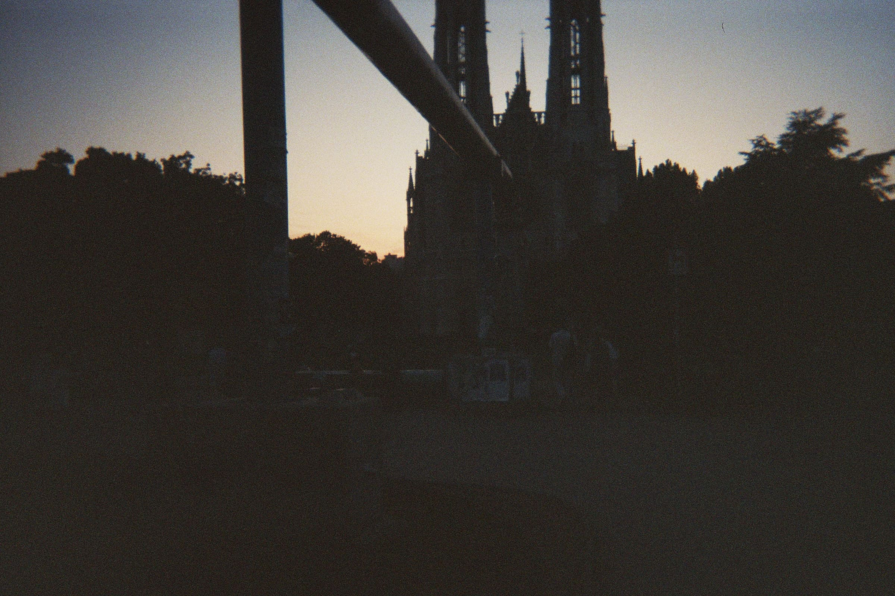
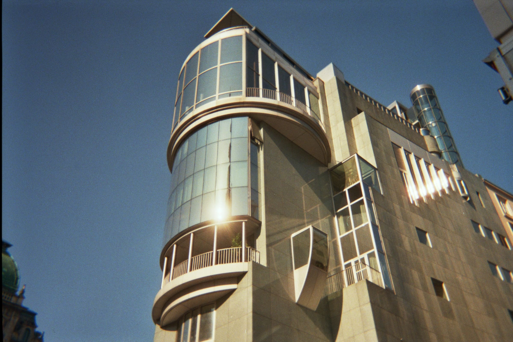

1. City in AUGUST (2025)
Team: Anna-Chiara Marsili | Typology: Photography
For the "City in August" photography project, the deliberate choice was made to spend a week in Vienna in August 2025 armed only with a Kodak disposable camera limited to 27 exposures...


2. I tre sardi dell'ISIA (2024)
Team: Francesco Cocconi, Allegra Costato, Anna-Chiara Marsili, Vittoria Sirtori
Typology: Editorial Design
Developed at the Politecnico di Milano, "I tre sardi dell'ISIA" is an editorial and conceptual project exploring the design culture of ISIA of Monza...

[Altri progetti in fase di caricamento testi...]